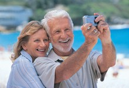
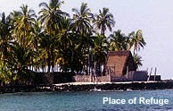
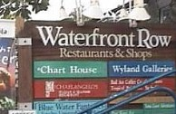
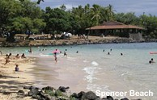

|

|
 |
|
 |
The Kona Coast is the leeward or west side of the Big Island with incredible diversity. You can explore ancient lava flows, historic Hawaiian heiaus and baths, and pristine hidden beaches. As you move south, the stark lava flows around Keahole-Kona International Airport are soon replaced by lush tropical vegetation as you drive upland from the coast. The mountains of Hualalai (8,000 ft.) and Mauna Loa (13,000 ft.) oversee the coast, often from cloud banks. Offshore, whales frequent our waters all year, while tropical fish, turtles, moray eels, manta rays, and dolphins feast over coral beds. We appreciate your cooperation by enjoying the dolphins from the beach only. Never approach a dolphin, and stay 50 yards away from any dolphin at all times. Rainfall ranges from 20" to 60" a year, and temperatures vary from 80 degrees during the day to a cool 60 degrees at night in the higher elevations, but wait 5 minutes, or drive 5 miles, and the weather may change at any time. |
|
 |
Pu'uhonua O Honaunau was a "Place of Refuge" to provide political and criminal asylum. The sacred precinct is preserved as a National Historical
Park. The beautiful site on a peninsula of black lava has the preserved and
restored remains of a royal palace and three heiaus, houses, fish pond, beach,
and canoe landing. It is located at Honaunau Bay immediately below our farm,
and a great place for a sunset picnic. Ho'okena Beach is a beautiful small, curved beach of black and white sand. Usually quiet on weekdays, this is a busy "locals' beach" on weekends where children learn to bodysurf. Kealakekua Bay is a designated underwater state park to protect its myriad multi-hued fish. Shoals of intensely colorful fish can always be found, and the bay is a favorite haunt for spinner dolphins who delight visitors with their aquabatics. The bay is also renowned for world-class snorkeling, scuba diving, and kayaking. Note that kayaking in the bay is limited to escorted groups. Captain Cook's Monument lies on the north side of Kealakekua Bay and marks the approximate spot where he died. The monument can be reached by sea, and also by a steep trail from the top of Napo'opo'o road. The Kona Historical Society Museum in Kealakekua, set in a century-old former general store building, boasts a collection of photographs and heirlooms describing Kona's history from the point of view of its immigrant farmers. |
|
 |
Kailua-Kona is famous for its cultural sites and shopping areas. King
Kamehameha resided here from 1812 until his death in 1819. The missionaries'
first introduction to the Big Island was here in 1820. Kailua-Kona
is the hub for many Kona Coast activities: a submarine excursion or sunset
dinner cruise, para-sailing and wind surfing, marlin fishing or whale watching.
Kahalu'u Beach One of the best protected snorkeling and scuba beaches, among many that stretch along the rocky but gentle coast. Ideal for young children and beginners, but it gets very crowded on weekends. Concession stands and rentals are available here. Hapuna Beach Park is one of the finest white-sand beaches in the world. A covered pavillion, picnic tables, showers, restrooms, and a refreshment stand make this an easy beach to visit. Spencer Beach Park is a very protected beach with easy paths from the parking area and public rest rooms. Nearby is Pu'ukohola Heiau (temple), Hawaii's most famous and largest heiau. From this location you can see the four largest mountains from one spot: Hualalai, Mauna Loa, Mauna Kea and the Kohala Mountains. Kawaihae is a commercial harbor, and home of the famous Kawaihae Canoe Club. |
|
 |
Lapakahi Park is an ancient Hawaiian village. Paved paths lead down
to the water's edge, with plaques along the way explaining about what you
pass, native trees and their uses, native stone house platforms, etc.
Hawi town, on the northern tip of the Big Island, was a sugar farming community until the 1970's. Windy Upolu Point is the northernmost point on the Big Island, with a beautiful view of Maui. Pololu Valley is a beautiful valley cut out of about 400 foot cliffs by a small meandering river. Access is by foot, 4-wheel drive vehicle, or on horseback. Volcanoes National Park is open 24 hours a day all year. As well as the spectacular Kilauea Crater, there is a superb visitor center, The Thomas A Jagger Museum, Thurston Lava Tube, Sulphur Banks, Volcano House Hotel and Restaurant, Art Galleries and more. The park features numerous hiking trails, ranging from easy to challenging. Naalehu is a quaint town that straddles the highway, with several good restaurants for breakfast or lunch on your way. Punalu'u Black Sand Beach is a short side trip off the main highway, and very picturesque. |